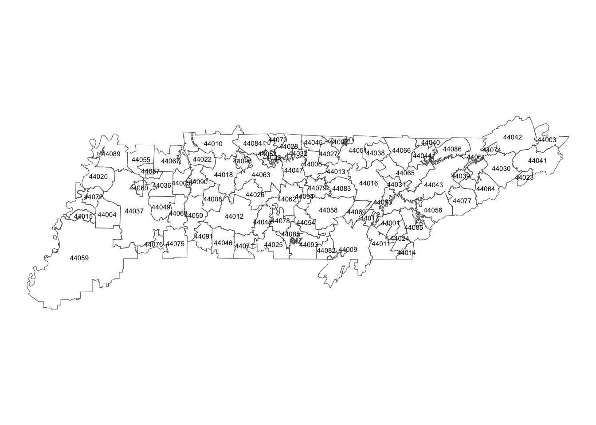
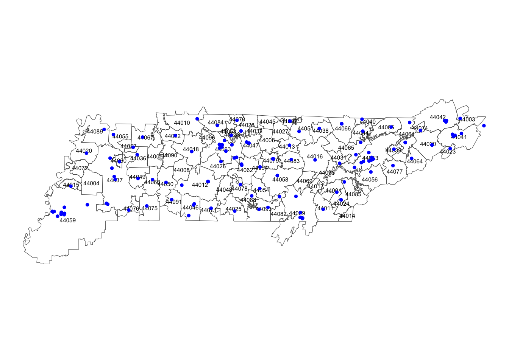
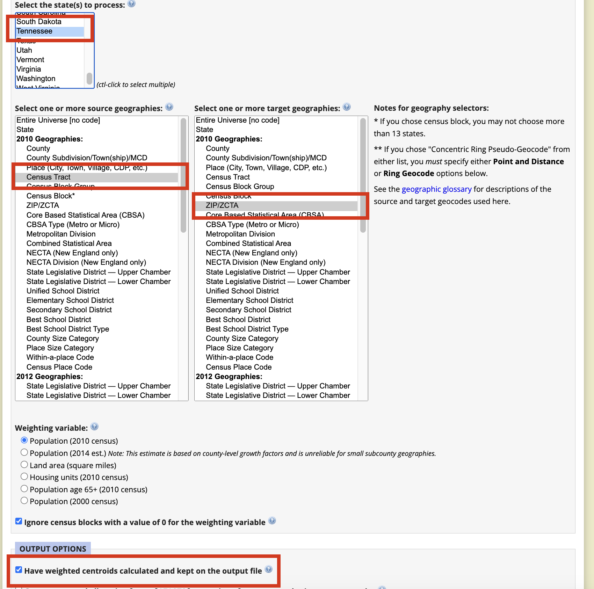
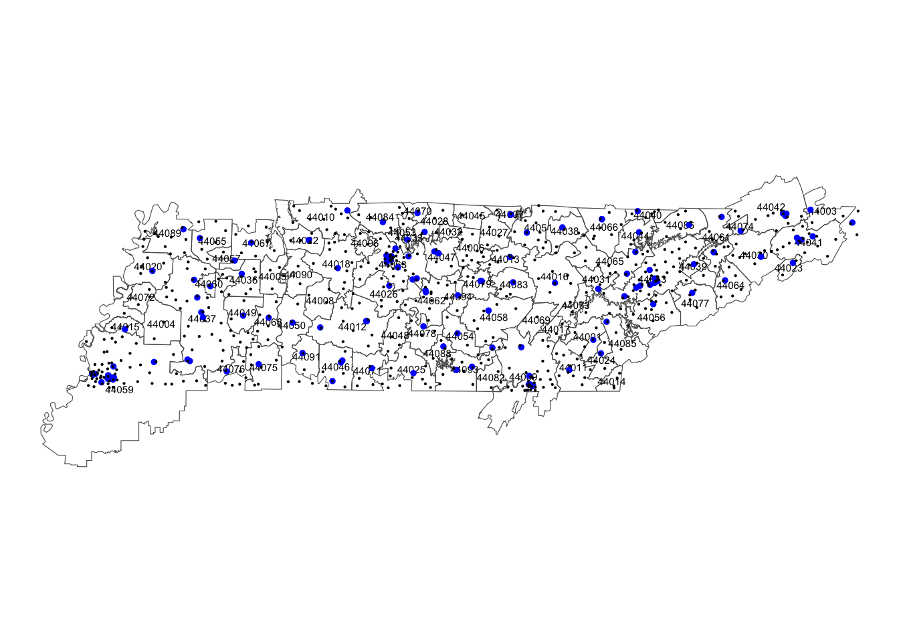
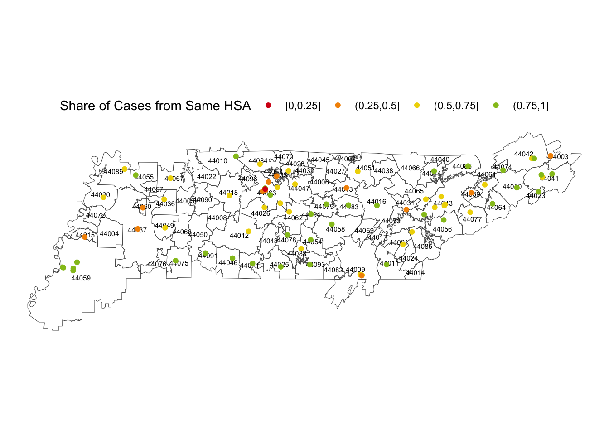

library(here)
library(tidyverse)
library(httr)
library(readr)
library(sf)
library(tidygeocoder)
library(tictoc)
library(jsonlite)
library(glue)
library(janitor)
library(progressr)
library(knitr)
library(kableExtra)
state = "TN"
# turn messages off
knitr::opts_chunk$set(warning = FALSE, message = FALSE) Calculating Hospital Capture Rates
Data
Geographic Data
Our replication example will draw on Health Service Area (HSA) boundary files from the Dartmouth Atlas of Health Care. We will use the shapefile format, as it is the most widely used and supported format for geographic data.
Load and Map A Shapefile for TN
if (!file.exists(here("output/shapefiles/hsa-shapefile.rds"))) {
# Set the URL of the ZIP file
url <-
"https://data.dartmouthatlas.org/downloads/geography/HSA_Bdry__AK_HI_unmodified.zip"
# Specify the location where the ZIP file will be saved temporarily
temp_zip <- tempfile(fileext = ".zip")
# Download the ZIP file
download.file(url, temp_zip, mode = "wb")
# Unzip the contents
unzip_dir <- tempdir()
unzip(temp_zip, exdir = unzip_dir)
# List the files in the unzipped directory
files <- list.files(unzip_dir, full.names = TRUE, recursive = TRUE)
# Find the shapefile
shp_ <- grep(".shp", files, value = TRUE)
# load the shapefile
sf_hsa <- st_read(shp_) %>%
sf::st_transform(crs = "+proj=aea +lat_1=29.5 +lat_2=45.5 +lat_0=37.5 +lon_0=-96") %>%
st_simplify(dTolerance = 500) %>%
st_transform(4326) %>%
st_make_valid() %>%
# add the x,y coordinates at the centroid as additional variables
bind_cols(st_centroid(.) %>% st_coordinates() %>% as_tibble() %>% set_names(c("cent_x", "cent_y")))
sf_hsa %>% write_rds(here("blog/posts/capture-rate/hsa-shapefile.rds"))
}Reading layer `HsaBdry_AK_HI_unmodified' from data source
`/private/var/folders/d_/ln092xjn6flc9xkd81kp42fh0000gp/T/RtmpveNvgP/HSA_Bdry__AK_HI_unmodified/hsa-shapefile/HsaBdry_AK_HI_unmodified.shp'
using driver `ESRI Shapefile'
Simple feature collection with 3436 features and 8 fields
Geometry type: MULTIPOLYGON
Dimension: XY
Bounding box: xmin: -178.2252 ymin: 18.91383 xmax: -66.95047 ymax: 71.3831
Geodetic CRS: GCS_unnamedsf_hsa <- read_rds(here("blog/posts/capture-rate/hsa-shapefile.rds"))p0 <-
sf_hsa %>%
filter(grepl(glue::glue("{state}-"),HSANAME)) %>%
ggplot() +
geom_sf(fill=NA) +
geom_text(aes(x = cent_x, y = cent_y, label = HSA93), size = 2) +
# use theme_map()
theme_void()
p0
Note that some areas of the state aren’t covered by this filter, as there are some HSAs with names located in adjacent states that extend into TN.
Hosptial Locations
We will next identify and geocode the location of general acute care hospitals using the Provider of Services (POS) files from CMS. The POS files have an API that allows us to download the data in JSON format. We will use the httr package to make the API call and the jsonlite package to parse the JSON data into a data frame.
The CMS API is paginated, meaning it will only return 1,000 rows of data at a time. For this reason, we write a repeat loop to cycle through the various pages necessary to load all the POS files for TN.
# URL of the API
api_url <- "https://data.cms.gov/data-api/v1/dataset/729dc3af-2a2e-499d-aae7-52b52d426a9f/data"
page = 0
repeat {
page = page + 1
cat(paste0(page,"\n"))
call <-
glue::glue("{api_url}?filter[STATE_CD]={state}&page={page}&filter[PRVDR_CTGRY_CD]=01&filter[PRVDR_CTGRY_SBTYP_CD]=01")
json_data <- fromJSON(call)
if (page == 1) {
df_ <- json_data
} else {
df_ <- bind_rows(df_, json_data)
}
if (nrow(json_data) < 1000)
break
}1df_pos <-
df_ %>%
janitor::clean_names() %>%
select(prvdr_num, st_adr, city_name, state_cd, zip_cd,prvdr_ctgry_sbtyp_cd, fac_name,crtfd_bed_cnt) %>%
mutate(address = glue("{st_adr} {city_name} {state_cd} {zip_cd}"))df_pos %>%
head() %>%
kable() %>%
kable_styling()| prvdr_num | st_adr | city_name | state_cd | zip_cd | prvdr_ctgry_sbtyp_cd | fac_name | crtfd_bed_cnt | address |
|---|---|---|---|---|---|---|---|---|
| 440001 | 2030 TEMPLE HILL ROAD | ERWIN | TN | 37650 | 01 | UNICOI COUNTY HOSPITAL | 10 | 2030 TEMPLE HILL ROAD ERWIN TN 37650 |
| 440002 | 620 SKYLINE DRIVE | JACKSON | TN | 38301 | 01 | JACKSON-MADISON COUNTY GENERAL HOSPITAL | 792 | 620 SKYLINE DRIVE JACKSON TN 38301 |
| 440003 | 555 HARTSVILLE PIKE | GALLATIN | TN | 37066 | 01 | SUMNER REGIONAL MEDICAL CENTER | 155 | 555 HARTSVILLE PIKE GALLATIN TN 37066 |
| 440005 | UNIVERSITY AV | SEWANEE | TN | 37375 | 01 | EMERALD HODGSON HOSPITAL | 42 | UNIVERSITY AV SEWANEE TN 37375 |
| 440006 | 3441 DICKERSON PIKE | NASHVILLE | TN | 37207 | 01 | TRISTAR SKYLINE MEDICAL CENTER | 395 | 3441 DICKERSON PIKE NASHVILLE TN 37207 |
| 440007 | 481 INTERSTATE DRIVE | MANCHESTER | TN | 37355 | 01 | UNITY MEDICAL CENTER | 49 | 481 INTERSTATE DRIVE MANCHESTER TN 37355 |
Geocoding Hospital Locations
With the hospital address field now in hand, we can geocode the latitude and longitude of each of these addresses using the tidygeocoder package. This geocoder provides several options, including the batch geocoding service from the Ceneus Bureau as well as services provided by ARCGis and OpenStreetMap.
We will use the Census Bureau’s batch geocoding service first, and then use the ARCGis service for any addresses that were not successfully geocoded by the Census Bureau. In principle, if we still had remaining ungeocoded addresses, we could incorporate additional services.
# https://geocoding.geo.census.gov/geocoder/Geocoding_Services_API.html
df_geo_1 <-
df_pos %>%
geocode(address, method = 'census', lat = latitude, long = longitude) %>%
mutate(source = ifelse(!is.na(latitude),"census_address","missing"))
df_geo_2 <-
df_geo_1 %>%
filter(source=="missing") %>%
select(-latitude,-longitude,-source) %>%
geocode(address, method = 'arcgis', lat = latitude, long = longitude) %>%
mutate(source = ifelse(!is.na(latitude),"arcgis_address","missing"))
sf_hosp <-
df_geo_1 %>%
bind_rows(df_geo_2) %>%
select(prvdr_num, fac_name, crtfd_bed_cnt, latitude, longitude, source) %>%
filter(source!="missing") %>%
# convert to a sf object
st_as_sf(coords = c("longitude", "latitude"), crs = 4326) %>%
mutate(closed = as.integer(grepl("CLOSED",fac_name))) %>%
filter(closed==0)p1 <-
p0 +
geom_sf(data = sf_hosp, aes(color = factor(closed), shape = factor(closed)), size = 1) +
scale_colour_manual(guide = FALSE, values = c("blue","red")) +
scale_shape_manual(guide = FALSE, values = c(19,4))
p1
ZIP Code Centroids
We will next identify the centroid of each ZIP code in TN. We will use the Geographic Corresponance Engine to map census tracts to the ZIP code(s) they overlap with. The population-weighted average of the centroids of these cenus tracts within a ZIP code is then used to calculate the population-weighted centroid of the ZIP.
To construct the .csv file referenced below, we mapped each census tract to its ZIP code, as seen in the screenshot below. Be sure to also include the option to calculate the population-weighted centroid of each census tract.

census_tract_to_zip <-
read.csv(here("blog/posts/capture-rate/geocorr2014_2332503261.csv"),skip=1) %>%
as_tibble() %>%
janitor::clean_names()
sf_zip_centroids <-
census_tract_to_zip %>%
group_by(zip_census_tabulation_area) %>%
mutate(population_weight = tract_to_zcta5_allocation_factor * total_population_2010) %>%
summarise_at(
vars(
wtd_centroid_latitude_degrees,
wtd_centroid_w_longitude_degrees
),
~ weighted.mean(., w = .data$population_weight)
) %>%
select(zip_code = zip_census_tabulation_area,
y = wtd_centroid_latitude_degrees,
x = wtd_centroid_w_longitude_degrees) %>%
st_as_sf(coords = c("x", "y"), crs = 4326) %>%
bind_cols(st_coordinates(.) %>% as_tibble() %>% set_names(c("x", "y"))) %>%
mutate(zip_code = str_pad(
zip_code,
width = 5,
side = "left",
pad = "0"
))p1 +
geom_sf(data = sf_zip_centroids ,size = 0.1)
Hospital Service Area File
Our final data source are patient flows from the CMS Hospital Service Area Files. These files provide the number of FFS Medicare patients, the total patient days, and the total patient charges from each ZIP code that are treated at each hospital in a given year.
Important
Please note that the CMS files must abide by cell reporting rules, meaning that any ZIP code with fewer than 11 patients treated at a given hospital will not have its value shown. As such, using a data source such as the HCUP, is preferable. However, HCUP data must be individually purchased (by state), and our intent here is to provide methodological replication materials that draw exclusively on publicly-available data sources.
Note, again, that CMS provides an API service to obtain the service area data. In the code below, we cycle through each hospital in our example state, and query the API to obtain all the patient flow data for that facility. For some large hospitals, the number of rows exceeds 1,000 (the maximum in any one API query). For that reason, we use the offset option to cycle through the data in batches of up to 1,000 rows.
if (!file.exists(here("blog/posts/capture-rate/edge-list.rds"))) {
# URL of the API
api_url <-
"https://data.cms.gov/data-api/v1/dataset/8708ca8b-8636-44ed-8303-724cbfaf78ad/data"
calls <-
unique(sf_hosp$prvdr_num) %>% map( ~ ({
glue::glue("{api_url}?filter[MEDICARE_PROV_NUM]={.x}")
}))
edge_list <-
with_progress({
p_ <- progressor(steps = length(calls))
calls %>% map(~ ({
p_()
call <-
glue("{.x}")
json_data <- fromJSON(call)
if (length(json_data) > 0) {
if (nrow(json_data) < 1000) {
df_ <- json_data %>%
filter(!grepl("\\*", TOTAL_DAYS_OF_CARE)) %>%
janitor::clean_names()
} else {
offset = 1000
repeat {
call2 = glue("{call}&offset={offset}")
json_data_ <-
bind_rows(json_data, fromJSON(call2))
if (nrow(json_data_) < (nrow(json_data) + offset)) {
df_ <- json_data_ %>%
filter(!grepl("\\*", TOTAL_DAYS_OF_CARE)) %>%
janitor::clean_names()
break
} else {
offset = offset + 1000
}
}
}
df_ %>%
as_tibble() %>%
mutate_at(vars(total_days_of_care, total_charges, total_cases), function(x)
as.numeric(paste0(x)))
}
}))
})
edge_list %>%
bind_rows() %>%
write_rds(here("blog/posts/capture-rate/edge-list.rds"))
}
edge_list <-
read_rds(here("blog/posts/capture-rate/edge-list.rds"))Analysis
hosp_hsa <-
st_within(sf_hosp,sf_hsa,sparse = FALSE) %>% as.matrix()
colnames(hosp_hsa) = sf_hsa$HSA93
rownames(hosp_hsa) = sf_hosp$prvdr_num
df_hosp_hsa <-
hosp_hsa %>%
data.frame() %>%
rownames_to_column(var = "prvdr_num") %>%
gather(hsa,in_hsa,-prvdr_num) %>%
filter(in_hsa==TRUE) %>%
mutate(hosp_hsa = gsub("^X","",hsa)) %>%
select(medicare_prov_num = prvdr_num,hosp_hsa)
zip_hsa <-
st_within(sf_zip_centroids,sf_hsa, sparse = FALSE) %>% as.matrix()
colnames(zip_hsa) = sf_hsa$HSA93
rownames(zip_hsa) = sf_zip_centroids$zip_code
df_zip_hsa <-
zip_hsa %>%
data.frame() %>%
rownames_to_column(var = "zip_code") %>%
gather(hsa,in_hsa,-zip_code) %>%
filter(in_hsa==TRUE) %>%
mutate(zip_hsa = gsub("^X","",hsa)) %>%
select(zip_cd_of_residence = zip_code,zip_hsa)share_of_cases_from_same_hsa <-
edge_list %>%
left_join(df_hosp_hsa,by = "medicare_prov_num") %>%
left_join(df_zip_hsa,by = "zip_cd_of_residence") %>%
mutate(same_hsa = as.integer(hosp_hsa == zip_hsa)) %>%
mutate(same_hsa = ifelse(is.na(same_hsa),0,same_hsa)) %>%
group_by(medicare_prov_num) %>%
summarise(same_hsa = sum(same_hsa*total_cases, na.rm=TRUE)/sum(total_cases, na.rm=TRUE),
total_cases = sum(total_cases)) sf_hosp_final <-
sf_hosp %>%
left_join(share_of_cases_from_same_hsa,by = c("prvdr_num" = "medicare_prov_num")) %>%
mutate(share_cat = cut(same_hsa,seq(0,1,0.25),include.lowest = TRUE))
sf_hsa %>%
filter(grepl(glue::glue("{state}-"),HSANAME)) %>%
ggplot() +
geom_sf(fill=NA) +
geom_text(aes(x = cent_x, y = cent_y, label = HSA93), size = 2) +
# use theme_map()
theme_void() +
geom_sf(data = sf_hosp_final %>% filter(!is.na(share_cat)), aes(color = share_cat)) +
theme(legend.position = "top") +
ggsci::scale_color_frontiers(name= "Share of Cases from Same HSA") 
long_table <-
sf_hosp_final %>%
filter(total_cases>11) %>%
arrange(same_hsa) %>%
slice(c(1:5, (n() - 4):n())) %>%
select(fac_name, crtfd_bed_cnt, same_hsa,total_cases) %>%
mutate(fac_name = str_to_title(fac_name)) %>%
data.frame() %>%
select(-geometry) %>% arrange(same_hsa) %>%
na.omit()
# Splitting the table into two parts
first_part <- long_table[1:5, ]
second_part <- long_table[6:10, ]
# Creating kable tables for each part
first_kable <- kable(first_part, format = "html") %>%
kable_styling() %>%
add_header_above(c("Lowest Capture Rate" = ncol(first_part)))
second_kable <- kable(second_part, format = "html",row.names = FALSE) %>%
kable_styling() %>%
add_header_above(c("Highest Capture Rate" = ncol(second_part)))
# Combine the tables
final_table <- rbind(
first_kable,
second_kable,
deparse.level = 0
)| fac_name | crtfd_bed_cnt | same_hsa | total_cases |
|---|---|---|---|
| Vanderbilt University Medical Center | 1091 | 0.2782258 | 14632 |
| Tennova Healthcare Jefferson Memorial Hospital | 58 | 0.2832370 | 1384 |
| Tristar Skyline Medical Center | 395 | 0.3156176 | 6736 |
| Bristol Regional Medical Center | 282 | 0.3267459 | 7489 |
| Roane Medical Center | 105 | 0.3361399 | 1544 |
Hospitals with the Lowest Capture Rate
| fac_name | crtfd_bed_cnt | same_hsa | total_cases |
|---|---|---|---|
| Saint Francis Bartlett Medical Center | 196 | 0.9319527 | 3718 |
| Lincoln Medical Center | 91 | 0.9358289 | 374 |
| Tristar Southern Hills Medical Center | 136 | 0.9443219 | 1814 |
| Metro Nashville General Hospital | 150 | 1.0000000 | 252 |
| Saint Thomas Stones River Hospital | 55 | 1.0000000 | 82 |
Hospitals with the Highest Capture Rate